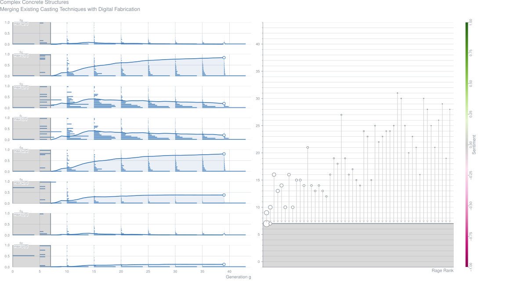
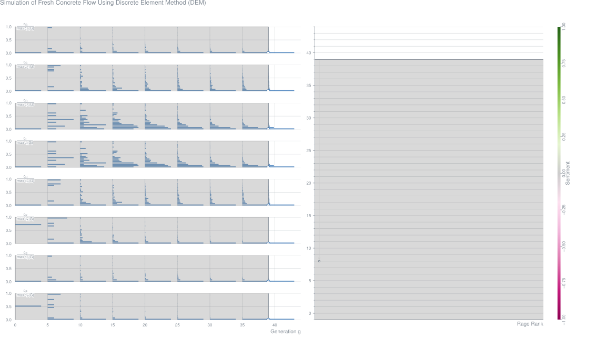
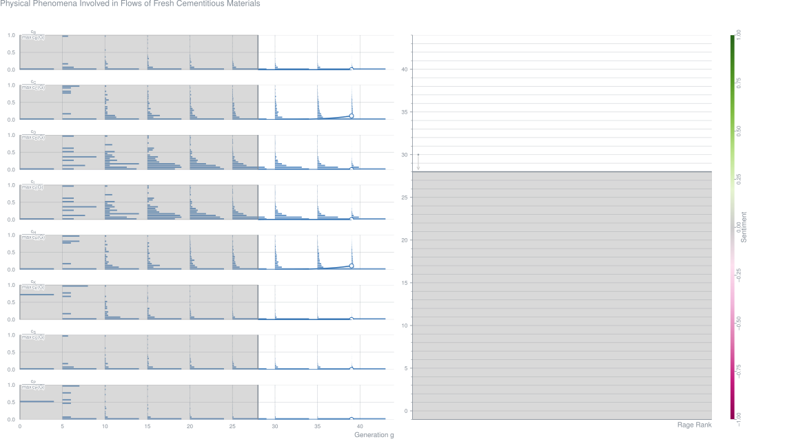
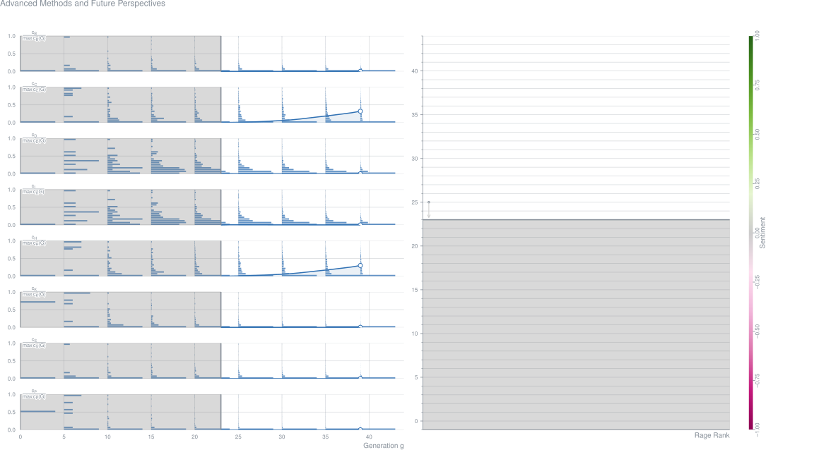
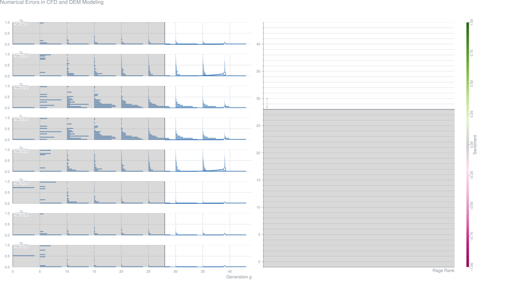

AbstractOver the course of the 20th century, architectural construction has gone through intense innovation in its material, engineering and design, radically transforming the way buildings were and are conceived. Technological and industrial advances enabled and challenged architects, engineers and constructors to build increasingly complex architectural structures from concrete. Computer-aided design and manufacturing (CAD/CAM) techniques have, more recently, rejuvenated and increased the possibilities of realizing ever more complex geometries. Reinforced concrete is often chosen for such structures as almost any shape can be achieved when placed into a formwork. However, most complex forms generated with these digital design tools bear little relation to the default modes of production used in concrete construction today. A large gap has emerged between the possibilities offered by the digital technology in architectural design and the reality of the building industry, where actually no efficient solutions exist for the production of complex concrete structures. This paper presents construction methods that unfold their full potential by linking digital design, additive fabrication and material properties and hence allow accommodating the construction of complex concrete structures. The emphasis is set on the on-going research project Smart Dynamic Casting (SDC) where advanced material design and robotic fabrication are interconnected in the design and fabrication process of complex concrete structures. The proposed fabrication process is belonging to an emerging architectural phenomenon defined first as Digital Materiality by Gramazio& Kohler (2008) or more recently as Material Ecologies by Neri Oxman [1].Metrics
Simulation of Fresh Concrete Flow Using Discrete Element Method (DEM) (2014-03)
Viktor Mechtcherine,
Annika Gram,
Knut Krenzer,
Jörg-Henry Schwabe,
Claudia Bellmann,
Sergiy Shyshko Contribution – Simulation of Fresh Concrete Flow
AbstractThe behaviour of fresh concrete during its mixing, transport, placement, and compaction can ultimately have significant effects on its mechanical performance, durability, surface appearance, and on its other properties after hardening. In concrete construction many problems result from the improper filling of formwork, insufficient de-airing, concrete segregation, etc. The importance of these issues has increased year after year since formwork is becoming continually more complex. Steel reinforcement has become denser, and the range workability has been considerably broadened by the use of self-compacting concrete (SCC) and other novel concrete materials. Consequently, on the one hand, modern material design must match particular demands resulting from the geometrical and technological conditions to which the material is subjected. On the other hand, the concrete working techniques and, in some cases, the geometry of structures can be optimised in considering the usage of particular concretes with their special rheological properties. So, in order to build concrete structures efficiently and with high quality, the consistency of the fresh concrete should comply with the requirements posed by the structure's geometry and by the methods of transport, placing, and compaction. Computer simulation of fresh concrete behaviour and the working processes could provide a powerful tool in optimising concrete construction and developing new concrete technologies [1]. As a complement to laboratory experimentation, discrete numerical simulation applied to granular materials provides insight into the meso-structure on the same scale as the grains and improves our understanding of the origin of macroscopic material behaviour. A description of various discrete simulation methods used in the mechanics literature can be found in [2]. This chapter focuses on the application of Discrete Element Method (DEM) in simulating the flow of fresh concrete. In particular a so-called particle model approach, which is a variation of the DEM, is considered. This approach uses simple basic elements – spheres and walls, which makes the computation relatively simple and fast. The great advantage of DEM is that it provides an opportunity to display discreetly the movement of the concrete mixture as a whole, and of its individual components. The concrete mixture is formed by a large number of particles connected among each other and to the model walls in accordance with laws of the defined contact behaviour. Thus, concrete technology's relevant processes and phenomena, such as mixing, compaction, de-airing, sedimentation, fibre distribution, orientation, etc. could be analyzed and taken into account in solving various problems. Based on work by Chu et al. [3] and Chu and Machida [17], a 3D DEM using a 3D particle flow code program, PCD3D, was applied in a preliminary study by Noor and Uomoto [4] to simulate the flow of SCC during various standard tests: the Slump Flow, L-box and V-funnel procedures. As opposed to an approach whose basis is a continuum, DEM was selected and was observed by the authors to reproduce the behaviour of fresh concrete in a qualitatively correct manner. As a compromise between modelling aggregate movement and limiting computation time, the material was divided into mortar and coarse aggregates larger than 7.5 mm. The method, proposed by Noor and Uomoto, was also adopted by Petersson and Hakami [5] and Petersson [6] in simulating SCC flow during L-box and slump flow testing, and J-ring and L-box testing, respectively. They found 3D- and, depending on the type of problem, 2D-simulations to be appropriate. More recently it was shown by Mechtcherine and Shyshko [7-9] that this numerical technique allows the simulation of the behaviour of fresh concrete with varied consistencies during transport, placement, and compaction. Processes such as casting, compaction of ordinary concrete, wet spraying and extrusion have been simulated as well. In the case of fibre-reinforced materials the effects of concrete consistency and the working process on the orientation of fibres have been of particular interest. The correlation between mix design and rheology was also investigated through the effect of adding large aggregates or fibre. Furthermore, first attempts towards modelling air inclusions and de-airing were carried out.Metrics
Physical Phenomena Involved in Flows of Fresh Cementitious Materials (2014-03)
Nicolas Roussel,
Annika Gram Contribution – Simulation of Fresh Concrete Flow
AbstractThe vast family of industrial cementitious materials presents such a variety of behaviors in the fresh state that describing them as a whole seems unattainable (cf. Fig 1.1). This is even more so for our objective here: studying the possibility to predict their response in practical processing conditions.Metrics
Computational Fluid Dynamics (2014-03)
Lars Thrane,
Ana Brás,
Paul Bakker,
Wolfgang Brameshuber,
Bogdan Cazacliu,
Liberato Ferrara,
Dimitri Feys,
Mette Geiker,
Annika Gram,
Steffen Grünewald,
Samir Mokeddem,
Nicolas Roquet,
Nicolas Roussel,
Surendra Shah,
Nathan Tregger,
Stephan Uebachs,
Frederick van Waarde,
Jon Wallevik Contribution – Simulation of Fresh Concrete Flow
AbstractIn many industries where the manufacturing process involves casting of a fluid or a suspension, it is essential to have tools predicting the flow and the possible subsequent hardening process for mould design and process planning. Trial and error may be applied to optimize the casting process when a large number of small samples are produced. However, when casting concrete, especially in-situ, trial and error is rarely an option and full control of the casting process is important. Otherwise, problems such as incomplete form filling, segregation, blocking, poor encapsulation of reinforcement, poor surface finish, and cold joints may be the outcome.
Advanced Methods and Future Perspectives (2014-03)
AbstractThe one-phase methods described in Chapter 2 were shown to be able to predict casting to some extent, but could not depict segregation, sedimentation and blockage occurring during flow. On the other hand, the distinct element methods described in Chapter 3 did not take into account the presence of two phases in the system and describes concrete as distinct elements interacting through more or less complex laws. A reliable numerical model of a multiphase material behaviour shall take into account both phases (solid and liquid). From the numerical point of view, concrete flow shall be seen therefore as the free surface flow of a highly-concentrated suspension of rigid grains.Metrics
Numerical Errors in CFD and DEM Modeling (2014-03)
Jon Wallevik,
Knut Krenzer,
Jörg-Henry Schwabe Contribution – Simulation of Fresh Concrete Flow
AbstractNumerical error present in Computational Fluid Dynamics (CFD) is given in Chapters 4.1. to 4.6. In the last chapter of this document, Chapter 4.7, a special attention is given to the error present for the Discrete Element Method (DEM). However, it should be clear that much of the topic present in Chapters 4.1 to 4.6 applies also for DEM, and other numerical flow techniques not mentioned here.Metrics